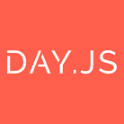
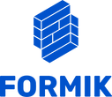

Concepção
Estes projetos foram projetos para ser uma trilha de estudos eficaz em capacitar
um desenvolvedor web.
O mundo do desenvolvimento web é bastante complexo: possui dezenas de tipos de atividades diferentes e cada
atividade possui centenas de ferramentas com o mesmo objetivo. E há incontáveis artigos, vídeos ou cursos
para cada uma dessas ferramentas.Nós fizemos o trabalho de organizar essas informações pra
você!
Ao concluir os projetos, você estará apto a se candidatar a uma vaga de Desenvolvedor Full-Stack
Junior.
Você também poderá empreender, atuar de forma independente, criando sites para atender uma demanda.
Todos os projetos possuem uma descrição detalhada da atividade, qual a relevância
no contexto profissional, quais são os pré-requisitos para a realização do
projeto, uma lista de vídeos, artigos e apostilas para estudo, uma meta de
tempo para a realização do projeto e sugestões sobre como aprender mais o
assunto abordado.
Pré-requisitos
- Computador com acesso à Internet e capaz de rodar um navegador moderno como o Chrome e o programa Visual Studio Code ou outros como Sublime Text, Atom ou até mesmo editores de texto mais simples como Notepad++ são suficientes;
- Organização, dedicação e disponibilidade de tempo.
Perfil do egresso
- Entende o básico sobre como funcionam a internet, sistemas operacionais, browsers, VSCode, Linters, Terminal, HTTP, REST APIs, Autenticação e Autorização, CORS, CSP e OWASP, SSH, Git e GitHub, GitHub Actions, Docker, AWS EC2, Encodings, SEO e Licenças
- Consegue utilizar a documentação oficial de ferramentas de desenvolvimento
- Desenvolve um sistema a partir de protótipos e documentos de requisitos
 
- ]Desenvolve uma aplicação web responsiva e acessível com HTML, CSS, SCSS, Bootstrap, Tailwind, NPM, Webpack, ReactJS, Redux, React Testing Library, Recharts, Day.js, Formik e Yup
- Desenvolve um servidor web utilizando NodeJS, Express, Jest, Sequelize em uma arquitetura MVC
- Modela, desenvolve e cria consultas a um banco de dados MySQL
- Aplica conceitos de usabilidade, manutenibilidade, segurança e observabilidade

Desenvolvendo essas habilidades, você estará apto a exercer um cargo de desenvolvedor full-stack júnior.
Apresentaremos, também, uma discussão sobre conhecimentos necessários para se profissionalizar em front-end ou back-end e sugestões de projetos para desenvolver essas habilidades que te prepararão para ser um profissional de nível pleno.
Meta de tempo de estudos
Separe 15 horas para estudar:
- superficialmente o significado de cada termo do perfil do egresso (repita esse processo periodicamente daqui para frente);
- o funcionamento geral da web;
- como usar o VSCode para interagir com arquivos e executar códigos (busque mais informação aos poucos sobre suas extensões, atalhos e opções de preferência);
- como usar o Git e o GitHub;
- como usar o Dev Tools.
Sugestão de estudos iniciais
É importante ter uma noção de como a internet funciona e quais são as ferramentas envolvidas. Caso algo não
fique claro, pesquise seu significado. Mas não se desespere! Você precisa apenas ter uma ideia do assunto,
pois tudo isso vai ser estudado com profundidade em algum momento.
- Dicas para o estudo autodidata de desenvolvimento de sistemas
- Visão Geral da Programação Web
- Fundamentos WEB: essa playlist contém praticamente o mesmo conteúdo do vídeo anterior, porém o autor traz maiores detalhes aos tópicos.
- VS Code: guia completo para instalar, usar e customizar: Este artigo apresenta os primeiros passos para utilizar a ferramenta Visual Studio Code, que será utilizada em todo o decorrer do curso.
- VS Code básico: é um vídeo demonstrando o uso do Visual Studio Code.
- O que são as ferramentas de desenvolvimento do navegador
- Mini-curso básico de Google Dev Tools
Projeto
- Instalar o Git e o GitHub Desktop;
- criar uma conta no GitHub;
- criar um repositório;
- baixar o repositório;
- abrí-lo no VSCode;
- fazer um commit pelo VSCode (e conferir se foi pro GitHub).